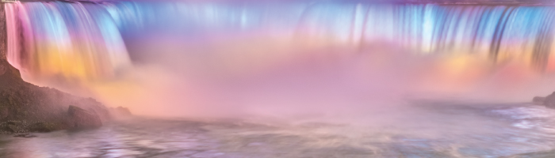
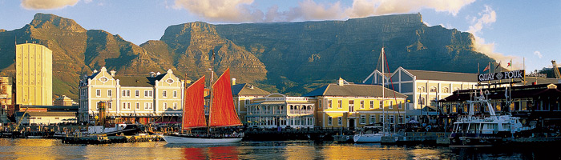
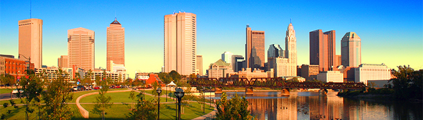

Here's what to visit:
- Yellowstone National Park
- New York City
- Seattle
- Niagara Falls
- Chicago
- Mount Rushmore National Memorial
- Ohio
Yellowstone National Park
Since March 1, 1872, millions of travelers from all over the world have visited Yellowstone National Park, one of the most awe-inspiring and breathtaking places in the world. In addition to its raw beauty and abundant wildlife, the immense Yellowstone volcano creates hydrothermal wonders, such as hot springs, mudpots, fumaroles, geysers, and travertine terraces.
New York City
As one of the world’s leading metropolises for art, fashion, food and theater, New York is a city every traveler should vissWhether you come for a day trip or for an extended stay, choosing what to see and do is the toughest part - the possibilities are endless.
Seattle

Seattle is the largest city based in the lesser-known state of Washington in the northwest region of the US. Resting on the Puget Sound, it is one of the fastest growing major cities in the United States. As one of America's strongest trade-links to Asia as well as being home to a huge tech-industry (Amazon's headquarters are based there), Seattle is rich in cultural diversity. One of the most striking things about the city is its sense of community. Embedded within the culture of the city lies a zest for life - a harmonious balance of hard work and a consciousness to enjoy the opportunities Seattle has to offer outside of the office. This culture seems to be the lifeblood of this wonderful city, most likely because of its geographic foundations.
Niagara Falls
The main reason to visit Niagara Falls is to see the falls and one of the most memorable ways to do just that is to sport a poncho and hop on a Maid of the Mist boat. These boats have been shuttling visitors to and from the base of the falls since the 1840s. Be prepared to get wet: the Maid of the Mist practically dunks you under the falls, but rain gear is provided and many say that this is one of the best ways to experience the splendor of Niagara Falls. In fact, it's one of the region's best guided tours. Recent visitors said you can't leave Niagara Falls without taking a ride on the Maid of the Mist. Aside from the incredible views, reviewers were also pleased with the tour length (20 minutes) and the modest ticket price. Though you are provided with a poncho, you should plan to wear waterproof shoes and gear, according to travelers. To beat the crowds, some visitors suggest getting to the attraction first thing in the morning (trips begin at 9 a.m.)
Chicago
In many ways, Chicago has everything you could want from a great international city—beautiful buildings, amazing food and entertainment, and a history of contributing to art, culture, and technology on a global scale. Add to that list its idyllic lakeside location and diverse population of friendly people, and what else do you need?
Mount Rushmore National Memorial

I could fit into George Washington's nose.” The 10-year-old next to me peered through his binoculars, slowly examining the four granite profiles looming above us. “The sculpted faces measure about 60ft,” a National Park Service ranger explained to us. “And the eyes of George Washington, Thomas Jefferson, Abraham Lincoln and Theodore Roosevelt are 11ft wide.” Cue the youngster's inevitable response: “Wow!”. High above the ponderosa pines, the 5,725ft-high mountain stands out against a deep blue sky. Although familiar from films and posters, the reality of Mount Rushmore is awe-inspiring. I can only echo the boy's reaction.
Ohio
If the USA could have a “greatest hits” for a single state, it just might be Ohio. All your favorite things about the USA - idyllic scenery, hearty cuisine, professional sports, even rock 'n roll - have a home here. This Midwestern state borders Lake Erie to the north and the Ohio River to the south with diverse people, places and experiences waiting in between. Three major urban centers - Cleveland, Columbus and Cincinnati - offer arts, culture, music, cuisine and spirits, but authentic experiences abound across the state. For families, there are top-notch theme parks, aquariums and zoos. Outdoors enthusiasts can hike, bike, paddle and camp amid thick forests and sandstone cliffs, or on the shores of Lake Erie. Sports lovers have their choice of professional baseball, football, soccer, hockey and basketball. And when you're hungry, Ohio delivers with cuisine ranging from regional comfort food to award-winning restaurants.